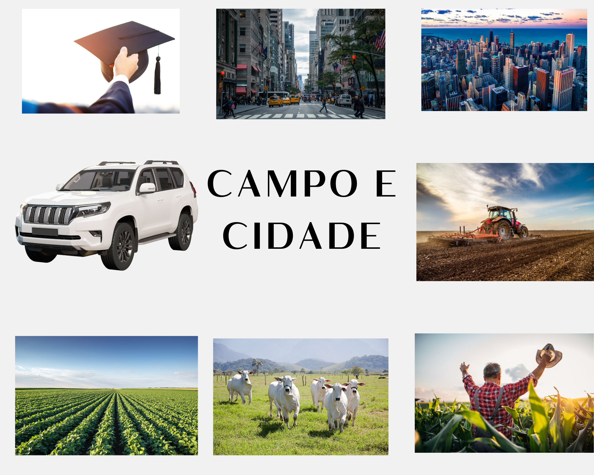

<!DOCTYPE html>
<html lang="pt-br">
<head>
    <meta charset="UTF-8">
    <meta name="viewport" content="width=device-width, initial-scale=1.0">
    <title>Agrinho</title>
    <link rel="stylesheet" href="style.css"
</head>
<body>
    
</body>
</html>
<header>
    <nav>
    <a href="#">Home</a>
    <a href="#">Saiba mais</a>
    </nav>
</header>
<main>
    <section>
        
        <h1>Campo a cidade</h1>
        <p> A mudança do campo para cidade é um ato que vem acontecendo muito em nossa sociedade, trabalhadores como Agricultores vem para área urbana em busca de novas oportunidades deixando para atrás sua vida simples na zona rural e indo para cidade, pois a cidade possui mais acesso à educação, saúde, e emprego.</p>
        <p> Porém, a cidade tem seus defeitos, e para pessoas que viveram sua vida inteira no campo não é fácil se acostumar com essa rotina agitada, o custo de vida é mais elevado e a concorrência para uma vaga de emprego embora sejam ser barreiras difíceis. Ainda assim, muitos conseguem com persistência ultrapassar essas barreiras e conseguindo sucesso.</p>
        <p> Colher oportunidades na cidade não significa abandonar suas raízes do campo, mas sim adquirir conhecimento com as possibilidades do mundo urbano. Assim esses imigrantes constroem uma vida próspera, contribuindo para o desenvolvimento tanto no campo, como na cidade mostrando o que é a verdadeira colheita de oportunidades. </p>
    </section>
    
</main>
<footer class="rodape">Eudes Cardoso</footer>
</body>
</html>